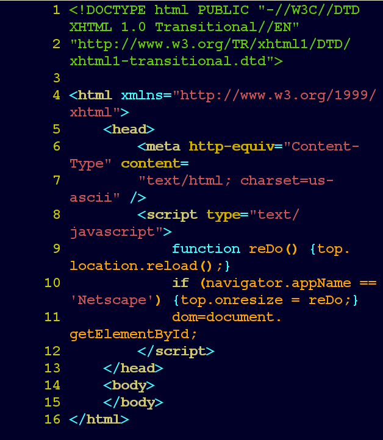

Здраствуйте, Вы проверяете работу человека который уже что то умеет ( чучуть ).
Тема моей статьи это языки програмирование
Что такое язык програмирование?
Язы́к программи́рования — формальный язык, предназначенный для записи компьютерных программ.
Язык программирования определяет набор лексических, синтаксических и семантических правил, определяющих внешний вид программы и действия, которые выполнит исполнитель под её управлением.
Самые часто использоваемые языки:
C++
C#
JavaScript
NodeJS
Pyton
Java
PHP
Для чего их используют?
Язык программирования предназначен для написания компьютерных программ, которые представляют собой набор правил, позволяющих компьютеру выполнить тот или иной вычислительный процесс, организовать управление различными объектами, и т. п.
Далие прикреплён кусок кода сайта:

Для чего я пошёл в IT?
У меня с самого детсва было 2 престрастия это:
Mашины
Компьютеры
На данный момент я работаю риелтором в Праге , это хорошая работа но я не получаю удовольствия когда ее делаю.
В тоже время когда я сажусь за програмирование, не важно будет то что я учу в университете или просто что то своё.
У меня вызывает восторг когда я вижу то что я сделал и человеку это понравилось. По этому я и далее хочу развиваться в этой оторосле.
Так же я занимаю волейболом на полу проффесональном уровне, когда я учился еще в школе мне сказали что с меня может получится очень хороший проффесиональный игрок.
Под конец школы я получил 1-й проффесональный разряд по волейболу и я решил уйти из большого спорта из за травмы колена на одном из соревнований.